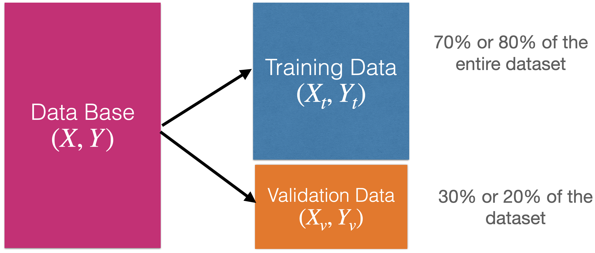
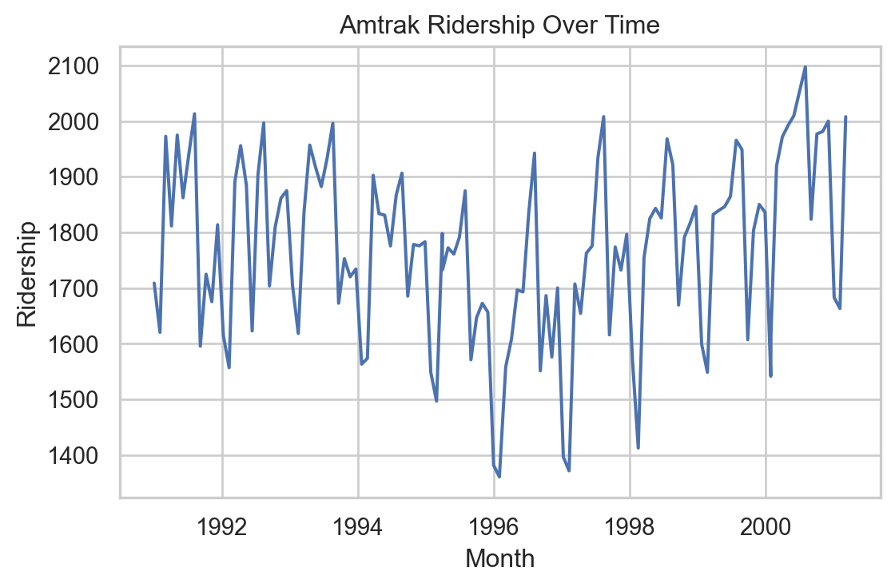

import numpy as np
import pandas as pd
import matplotlib.pyplot as plt
import seaborn as sns
from sklearn.model_selection import train_test_split
from sklearn.linear_model import LinearRegression
from sklearn.metrics import mean_squared_error, r2_scorePredictive Models and Time Series
IN2004B: Generation of Value with Data Analytics
Agenda
- Introduction
- Time Series
- Linear Regression Model for Time Series
Introduction
Load the libraries
Before we start, let’s import the data science libraries into Python.
Here, we use specific functions from the pandas, matplotlib, seaborn and sklearn libraries in Python.
Main data science problems
Regression Problems. The response is numerical. For example, a person’s income, the value of a house, or a patient’s blood pressure.
Classification Problems. The response is categorical and involves K different categories. For example, the brand of a product purchased (A, B, C) or whether a person defaults on a debt (yes or no).
The predictors (\(\boldsymbol{X}\)) can be numerical or categorical.
Main data science problems
Regression Problems. The response is numerical. For example, a person’s income, the value of a house, or a patient’s blood pressure.
Classification Problems. The response is categorical and involves K different categories. For example, the brand of a product purchased (A, B, C) or whether a person defaults on a debt (yes or no).
The predictors (\(\boldsymbol{X}\)) can be numerical or categorical.
Regression problem
Goal: Find the best function \(f(\mathbf{X})\) of the predictors \(\mathbf{X} = (X_1, \ldots, X_p)\) that describes the response \(Y\).
In mathematical terms, we want to establish the following relationship:
\[Y = f(\mathbf{X}) + \epsilon\]
- Where \(\epsilon\) is a natural (random) error.
How to find the shape of \(f(X)\)?
Using training data. 
How to find the shape of \(f(X)\)?
Using training data.

How to evaluate the quality of the candidate function \(\hat{f}(X)\)?
Using validation data.

How to evaluate the quality of the candidate function \(\hat{f}(X)\)?
Using validation data.

Moreover…
We can use test data for a final evaluation of the model.
Test data is data obtained from the process that generated the training data.
Test data is independent of the training data.

Linear Regression Model
A common candidate function for predicting a response is the linear regression model. It has the mathematical form:
\[\hat{Y}_i = \hat{f}(X_i) = \hat{\beta}_0 + \hat{\beta}_1 X_i.\]
Where \(i = 1, \ldots, n_t\) is the index of the \(n_t\) training data.
\(\hat{Y}_i\) is the prediction of the actual value of the response \(Y_i\) associated with a predictor value equal to \(X_i\).
The values \(\hat{\beta}_0\) and \(\hat{\beta}_1\) are called the coefficients of the model.
The values of \(\hat{\beta}_0\) and \(\hat{\beta}_1\) are obtained using the test data set and the least squares method.
This method finds the values of \(\hat{\beta}_0\) and \(\hat{\beta}_1\) that minimize the error made by the model \(\hat{f}(X_i)\) when trying to predict the responses of the training set.
Technically, the method minimizes the following expression
\[(Y_1 - (\hat{\beta}_0 + \hat{\beta}_1 X_1 ))^2 + (Y_2 - (\hat{\beta}_0 + \hat{\beta}_1 X_2 ))^2 + \cdots + (Y_{n_t} - (\hat{\beta}_0 + \hat{\beta}_1 X_{n_t} ))^2 \]
For the \(n_t\) the training data!
The idea in two dimensions

Example 1
We used the dataset called “Advertising.xlsx” in Canvas.
- TV: Money spent on TV ads for a product ($).
- Sales: Sales generated from the product ($).
- 200 markets
# Load the data into Python
Ads_data = pd.read_excel('Advertising.xlsx')Ads_data.head()| TV | Radio | Newspaper | Sales | |
|---|---|---|---|---|
| 0 | 230.1 | 37.8 | 69.2 | 22.1 |
| 1 | 44.5 | 39.3 | 45.1 | 10.4 |
| 2 | 17.2 | 45.9 | 69.3 | 9.3 |
| 3 | 151.5 | 41.3 | 58.5 | 18.5 |
| 4 | 180.8 | 10.8 | 58.4 | 12.9 |
Now, let’s choose our predictor and response. In the definition of X_full, the double bracket in [] is important because it allows us to have a pandas DataFrame as output. This makes it easier to fit the linear regression model with scikit-learn.
# Chose the predictor.
X_full = Ads_data.filter(['TV'])
# Set the response.
Y_full = Ads_data.filter(['Sales'])Create training and validation data
To evaluate a model’s performance on unobserved data, we split the current dataset into a training dataset and a validation dataset. To do this, we use the scikit-learn train_test_split() function.
X_train, X_valid, Y_train, Y_valid = train_test_split(X_full, Y_full,
test_size = 0.25,
random_state = 301655)We use 75% of the data for training and the rest for validation.
Fit a linear regression model in Python
In Python, we use the LinearRegression() and fit() functions from the scikit-learn to fit a linear regression model.
# 1. Create the linear regression model
LRmodel = LinearRegression()
# 2. Fit the model.
LRmodel.fit(X_train, Y_train)The following commands allow you to show the estimated coefficients of the model.
print("Coefficients:", LRmodel.coef_)Coefficients: [[0.05185463]]We can also show the estimated intercept.
print("Intercept:", LRmodel.intercept_)Intercept: [6.69303889]The estimated model thus is
\[\hat{Y}_i = 6.69 + 0.051 X_i.\]
Linear regression model assumptions
To use the regression model, the model errors \(e_i = Y_i - \hat{Y}_i\) obtained on the training data must meet three conditions:
- On average, they must be equal to 0.
- They must have the same dispersion or variability.
- They must be independent of each other.
These assumptions are evaluated using a graphical analysis of residuals (model errors).
In Python
To conduct a residual analysis, we need to obtain the predicted values and residuals of the model first (on the training data).
# Fitted values.
fitted = LRmodel.predict(X_train)
# Residuals
residuals = Y_train - fittedFor plotting, we put everything together in a pandas dataframe.
# Create a DataFrame for plotting
#results_df = pd.DataFrame()
#results_df['predicted'] = list(fitted)
#results_df['actual'] = list(Y_train)
#results_df['residual'] = results_df['predicted'] - results_df['actual']
#results_df = results_df.sort_values(by='residual').reset_index(drop=True)
#results_df.describe()Code
# Plot 1: Residuals vs Fitted
#plt.figure(figsize=(6, 4))
#sns.scatterplot(x = fitted, y = residuals)
#plt.axhline(0, color='red', linestyle='--')
#plt.title("Residuals vs Fitted")
#plt.xlabel("Fitted values")
#plt.ylabel("Residuals")
#plt.show()Code
# Plot 1: Residuals vs Fitted
#plt.figure(figsize=(6, 4))
#sns.scatterplot(x = range(len(residuals)), y = residuals)
#plt.axhline(0, color='red', linestyle='--')
#plt.title("Residuals vs Row Order")
#plt.xlabel("Observation Order")
#plt.ylabel("Residuals")
#plt.show()Prediction error
After estimating and validating the linear regression model, we can check the quality of its predictions on unobserved data. That is, on the data in the validation set.
One metric for this is the mean prediction error (MSE\(_v\)):
\[\text{MSE}_v = \frac{(Y_1 - (\hat{\beta}_0 + \hat{\beta}_1 X_1 ))^2 + (Y_2 - (\hat{\beta}_0 + \hat{\beta}_1 X_2 ))^2 + \cdots + (Y_{n_v} - (\hat{\beta}_0 + \hat{\beta}_1 X_{n_v} ))^2}{n_v}\]
- For \(n_v\), the validation data!
The smaller \(\text{MSE}_v\), the better the predictions.
In practice, the square root of the mean prediction error is used:
\[\text{RMSE}_v = \sqrt{\text{MSE}_v}.\]
The advantage of \(\text{RMSE}_v\) is that it can be interpreted as:
The average variability of a model prediction.
For example, if \(\text{RMSE}_v = 1\), then a prediction of \(\hat{Y} = 5\) will have an (average) error rate of \(\pm 1\).
In Python
To evaluate the model’s performance, we use the validation dataset. Specifically, we use the predictor matrix stored in X_valid.
In Python, we make the prediction using the pre-trained LRmodel.
Y_pred = LRmodel.predict(X_valid)To evaluate the model, we use the mean squared error in the Python mse() function. Recall that the responses from the validation dataset are in Y_valid, and the model predictions are in Y_pred.
mse = mean_squared_error(Y_valid, Y_pred) # Mean Squared Error (MSE)
print(round(mse, 2))15.49To obtain the root mean squared error (RMSE), we simply take the square root of the MSE.
print(round(mse**(1/2), 2))3.94Another Metric: \(R^2\)
In the context of Data Science, \(R^2\) can be interpreted as the squared correlation between the actual responses and those predicted by the model.
The higher the correlation, the better the agreement between the predicted and actual responses.
We compute \(R^2\) in Python as follows:
rtwo_sc = r2_score(Y_valid, Y_pred) # Rsquared
print(round(rtwo_sc, 2))0.33Mini-Activity (cooperative mode)
Consider the Advertising.xlsx dataset in Canvas.
Use a model to predict Sales that includes the Radio predictor (money spent on radio ads for a product ($)). What is the \(\text{RMSE}_v\)?
Now, use a model to predict Sales that includes two predictors: TV and Radio. What is the \(\text{RMSE}_v\)?
Which model do you prefer?
Other candidate functions
The linear regression model is one of the most common models for predicting a response. It is simple and easy to calculate and interpret.
However, it can be limited for very complex problems.
For this purpose, there are other, more advanced candidate functions \(\hat{f}(X)\), such as:
K nearest neighbors.
Decision or regression trees.
Ensamble methods (bagging and random forest).
Time Series
What is a time series?
It is a sequence of observations collected at successive time intervals.
Time series data is commonly used in fields such as finance, economics, weather forecasting, signal processing, and many others.
Analyzing time series data helps us understand patterns, trends, and behaviors over time, enabling prediction, anomaly detection, and decision-making.
Example 2

Technically, a time series is a set of observations about a (discrete) predictor \(T\) and a response \(Y\).
Observations of \(Y\) are recorded at the moments or times given by the predictor \(T\).
The special feature of the time series is that the observations of \(Y\) are not independent!
| Day | T | Temperature (Y) |
|---|---|---|
| Monday | 1 | 10 |
| Tuesday | 2 | 12 |
| Wednesday | 3 | 15 |
| Thursday | 4 | 14 |
| Friday | 5 | 18 |
Example 3: Amtrak data
The Amtrak train company in the USA collects data on the number of passengers traveling on its trains.
Records are available from January 1991 to March 2004.
The data is available in “Amtrak.xlsx” on Canvas.
Amtrak_data = pd.read_excel('Amtrak.xlsx')Amtrak_data.head()| Month | t | Ridership (in 000s) | Season | |
|---|---|---|---|---|
| 0 | 1991-01-01 | 1 | 1708.917 | Jan |
| 1 | 1991-02-01 | 2 | 1620.586 | Feb |
| 2 | 1991-03-04 | 3 | 1972.715 | Mar |
| 3 | 1991-04-04 | 4 | 1811.665 | Apr |
| 4 | 1991-05-05 | 5 | 1974.964 | May |
Time series plot in Python
We can create a line graph to visualize the evolution of Amtrak train ridership over time using lineplot from seaborn.
Code
plt.figure(figsize=(6, 4))
sns.lineplot(x='Month', y='Ridership (in 000s)', data = Amtrak_data)
plt.xlabel('Month')
plt.ylabel('Ridership')
plt.title('Amtrak Ridership Over Time')
plt.tight_layout()
plt.show()Informative Series
An informative time series is a series that contains patterns that we can use to predict future values of the series.
The three possible patterns are:
- Trend: the series has an increasing/decreasing behavior.
- Seasonality: the series has a repeating cyclical pattern in its values.
- Autocorrelation: the series follows a pattern that can be described by previous values of the series.
Example 4: Airline data
This series has an upper trend.
This series has cyclical patterns in its values.
Although not immediately visible, we can use the previous values of the series to describe the future ones.
Non-informative series: White noise
White noise is a series whose values, on average, are 0 and have a constant variation.
Its values are also independent of each other.
It is used to describe random or natural error.
Linear Regression Model for Time Series
Linear regression model
The linear regression model is useful for capturing patterns in a time series. In this context, the model takes the form:
\[\hat{Y}_i = \hat{\beta}_0 + \hat{\beta}_1 T_i\]
Where \(i = 1, \ldots, n_t\) is the index of the \(n_t\) training data.
\(\hat{Y}_i\) is the prediction of the actual value of the response \(Y_i\) at time \(T_i\).
Trend
The trend of the time series is captured by the value of \(\hat{\beta}_1\) at
\[\hat{Y}_i = \hat{\beta}_0 + \hat{\beta}_1 T_i\]
If \(\hat{\beta}_1\) is positive, the series has an upward trend.
If \(\hat{\beta}_1\) is negative, the series has a downward trend.
The values of \(\hat{\beta}_0\) and \(\hat{\beta}_1\) are obtained using the least squares method.
Model evaluation
Remember that the errors of the linear regression model (\(e_i = Y_i - \hat{Y}_i\)) must meet two conditions:
On average, they must be equal to 0.
They must have the same dispersion or variability.
They must be independent of each other.
In the context of time series, this means that the model errors \(e_i\) must behave like white noise that contains no patterns.
Example 3: Amtrak data (cont.)
Let’s fit a linear regression model to the ridership data from Amtrak.

Creating a train and a validation data
In time series, the order of the data matters because each observation is tied to a specific point in time.
Unlike typical datasets where observations are independent of one another, time series data follows a sequence where past values influence future ones.
Because of this, we cannot randomly split the data using a function like train_test_split(). Doing so might result in a situation where the model learns from future values to predict past ones—which doesn’t make sense and would lead to overly optimistic performance.
Instead, we want to mimic real-world forecasting: train the model on earlier time periods and test it on later ones.
To help us do this properly, we use the code below.
# Define the split point
split_ratio = 0.8 # 80% train, 20% test
split_point = int(len(Amtrak_data) * split_ratio)
# Split the data
Amtrak_train = Amtrak_data[:split_point]
Amtrak_validation = Amtrak_data[split_point:]This code ensures that the training data always comes before the validation data in time, preserving the temporal order. The proportion of data that goes to training is set using split_ratio.
Fit linear regression model
We first set the predictor and response.
# Set predictor.
X_train = Amtrak_train.filter(['t'])
# Set response.
Y_train = Amtrak_train.filter(['Ridership (in 000s)'])Next, we fit the model using LinearRegression() and fit() from scikit-learn.
# 1. Create linear regression model.
LRmodelAmtrak = LinearRegression()
# 2. Fit the model to the training data.
LRmodelAmtrak.fit(X_train, Y_train)Let’s inspect the estimated coefficient for the predictor (time).
print(LRmodelAmtrak.coef_)[[-1.2818326]]And the intercept.
print(LRmodelAmtrak.intercept_)[1810.77686661]The estimated model then is:
\[\hat{Y}_i = 1810.777 - 1.281 T_i.\]
Residual analysis
We can validate the model using a residual analysis on the training data. To this end, we first compute the predicted values and residuals of the model.
Y_pred = LRmodelAmtrak.predict(X_train)
residuals = Y_train - Y_predCode
plt.figure(figsize=(8, 6))
sns.residplot(x=Y_pred, y=residuals, lowess=True, line_kws={'color': 'red'})
plt.xlabel("Fitted Values (Y_pred)")
plt.ylabel("Residuals")
plt.title("Residuals vs. Fitted Values")
plt.show()Code
#plt.figure(figsize=(8, 6))
#sns.scatterplot(x=X_train, y=residuals)
#plt.xlabel("Time (t)")
#plt.ylabel("Residuals")
#plt.title("Residuals vs. Time")
#plt.show()The model is more flexible than that
If necessary, the linear regression model can be extended to capture quadratic relationships. For this, the model takes the following form:
\[\hat{Y}_i = \hat{\beta}_0 + \hat{\beta}_1 T_i + \hat{\beta}_2 T^{2}_i \]
Where \(T^{2}_i\) is the squared value of the time index.
\(\hat{\beta}_2\) is a term that captures possible curvature in the time series.
In Python
To include a quadratic term, we must augment our predictor matrix with an additional column. The following code shows how to augment X_full by the square of the Amtrak_data['t'] column. This is done using the pandas .concat() function. The resulting matrix is stored in X_quad.
X_quad = pd.concat([X_train, Amtrak_train['t']**2], axis = 1)Next, we follow the same steps to fit this model.
# 1. Create linear regression model
QuadmodelAmtrak = LinearRegression()
# 2. Fit linear regression model
QuadmodelAmtrak.fit(X_quad, Y_train)We show the estimated coefficients in Python.
print("Intercept = ", QuadmodelAmtrak.intercept_)
print("Coefficients = ", QuadmodelAmtrak.coef_)Intercept = [1866.84019635]
Coefficients = [[-4.64563238 0.03397778]]The estimated model thus is
\[\hat{Y}_i = 1866.84 - 4.65 T_i + 0.03 T^2_i.\]
Residual analysis
Code
# Remember to use the same `X_quad`
Y_pred_quad = QuadmodelAmtrak.predict(X_quad)
residuals_quad = Y_train - Y_pred_quad
plt.figure(figsize=(8, 6))
sns.residplot(x=Y_pred_quad, y=residuals_quad, lowess=True, line_kws={'color': 'red'})
plt.xlabel("Fitted Values (Y_pred_quad)")
plt.ylabel("Residuals")
plt.title("Residuals vs. Fitted Values")
plt.show()Code
#plt.figure(figsize=(8, 6))
#sns.scatterplot(x=Amtrak_train['t'], y=residuals_quad)
#plt.xlabel("Time (t)")
#plt.ylabel("Residuals")
#plt.title("Residuals vs. Time")
#plt.show()Model evaluation using validation data
Remember that another way to evaluate the performance of a model is using the \(\text{MSE}_v\) or \(\text{RMSE}_v\) on the validation data. To this end, we need some Python objects.
# Set predictor.
X_valid = Amtrak_validation.filter(['t'])
# Set response.
Y_valid = Amtrak_validation.filter(['Ridership (in 000s)'])Let’s compute the \(\text{MSE}_v\) for the linear regression model.
Y_val_pred_lin = LRmodelAmtrak.predict(X_valid)
mse = mean_squared_error(Y_valid, Y_val_pred_lin)
print(round(mse, 2))62517.47Let’s do the same for the the linear regression model with a quadratic term.
X_quad_valid = pd.concat([X_valid, Amtrak_validation['t']**2], axis = 1)
Y_val_pred_quad = QuadmodelAmtrak.predict(X_quad_valid)
mse_quad = mean_squared_error(Y_valid, Y_val_pred_quad) # Mean Squared Error (MSE)
print(round(mse_quad, 2))30271.15We conclude that the linear model with a quadratic term is better than the linear regression model because the \(\text{MSE}_v\) of the former is smaller than for the latter.
Mini-Activity (cooperative mode)
Consider the dataset CanadianWorkHours.xlsx in Canvas.
Split the data into training and validation
Visualize the series in Python. The response variable is Working Hours and the predictor is Year.
Using Python, answer the question: Which of the following models best fits the series?
Linear trend regression model.
Quadratic trend regression model.
Exponential trend regression model.
Identifying Heteroskedasticity
Heteroskedasticity arises when the dispersion of model errors is not constant over time.
To see it, let’s go back to the Airline data, which contains the number of passengers of an international airline per month between 1949 and 1960.
Airline_data = pd.read_excel("Airline.xlsx")Airline_data.head()| T | Number of passengers | |
|---|---|---|
| 0 | 1 | 112 |
| 1 | 2 | 118 |
| 2 | 3 | 132 |
| 3 | 4 | 129 |
| 4 | 5 | 121 |
For illustrative purposes, we will not split the time series into training and validation datasets.
Code
plt.figure(figsize=(10, 5))
sns.lineplot(x='T', y='Number of passengers', data = Airline_data)
plt.xlabel('Time')
plt.ylabel('Number of passengers')
plt.title('Number of passengers across time')
plt.tight_layout()
plt.show()Let’s fit a linear regression model.
# Set predictor.
X_full = Airline_data.filter(['T'])
# Set response.
Y_full = Airline_data.filter(['Number of passengers'])
# 1. Create linear regression
LRmodelAirline = LinearRegression()
# 2. Fit the model
LRmodelAirline.fit(X_full, Y_full)Residual analysis
Heteroskedasticity: Dispersion of the residuals increases with the predicted value.
Code
Y_pred = LRmodelAirline.predict(X_full)
residuals = Y_full - Y_pred
plt.figure(figsize=(6, 4))
sns.residplot(x=Y_pred, y=residuals, lowess=True, line_kws={'color': 'red'})
plt.xlabel("Fitted Values (Y_pred)")
plt.ylabel("Residuals")
plt.title("Residuals vs. Fitted Values")
plt.show()Solution
If we identify heteroskedasticity in the regression model errors, we have several transformation options for our original series.
A common transformations to the time series \(Y_i\) is the Natural Logarithm
If the original time series contains negative values, it can be lagged by adding the negative of its minimum value.
In Python
The easiest way to apply the logarithm in Python is to use the log() function from the numpy library
log_Y_full = np.log( Y_full )Now, the response to use is in log_Y_full.
The steps to fit a linear regression model are similar.
# 1. Create linear regression
LRmodelAirlineTransformed = LinearRegression()
# 2. Fit the model
LRmodelAirlineTransformed.fit(X_full, log_Y_full)Residual analysis
With transformation
Code
Y_pred_log = LRmodelAirlineTransformed.predict(X_full)
residuals_log = log_Y_full - Y_pred_log
plt.figure(figsize=(6, 4))
sns.residplot(x=Y_pred_log, y=residuals_log, lowess=True, line_kws={'color': 'red'})
plt.xlabel("Fitted Values")
plt.ylabel("Residuals")
plt.title("Residuals vs. Fitted Values")
plt.show()Without transformation
Code
Y_pred = LRmodelAirline.predict(X_full)
residuals = Y_full - Y_pred
plt.figure(figsize=(6, 4))
sns.residplot(x=Y_pred, y=residuals, lowess=True, line_kws={'color': 'red'})
plt.xlabel("Fitted Values")
plt.ylabel("Residuals")
plt.title("Residuals vs. Fitted Values")
plt.show()What do I do if the transformation doesn’t work?
If the log transformation doesn’t significantly reduce heteroskedasticity, there are models for modeling variance called GARCH.
You can find literature on these models and their software implementations in a time series textbook such as Time Series Analysis with Applications in R by Cryer and Chan.
Seasonality
Seasonality refers to repetitive or cyclical behavior that occurs with a constant frequency.
Examples:
Demand for winter clothing
Demand for tourist travel
Amount of rainfall throughout the year.
Capturing seasonality
The linear regression model can be extended to capture seasonal patterns in the time series.
To do this, an additional categorical predictor is created that indicates the season to which each data item belongs.
Behind the scenes, the additional categorical predictor is transformed into several auxiliary numerical predictors.

Analyzing seasonal series in Python
Consider the data in Amtrak_train with the additional predictor of Season to model seasonality.
| Month | t | Ridership (in 000s) | Season | |
|---|---|---|---|---|
| 0 | 1991-01-01 | 1 | 1708.917 | Jan |
| 1 | 1991-02-01 | 2 | 1620.586 | Feb |
| 2 | 1991-03-04 | 3 | 1972.715 | Mar |
| 3 | 1991-04-04 | 4 | 1811.665 | Apr |
| 4 | 1991-05-05 | 5 | 1974.964 | May |
To fit a linear regression model with a categorical variable like Season, we must transform the text categories into numbers. To do this, we use dummy variables constructed using the following commands.
dummy_data = pd.get_dummies(Amtrak_train['Season'], dtype = 'int')
dummy_data.head(4)| Apr | Aug | Dec | Feb | Jan | Jul | Jun | Mar | May | Nov | Oct | Sep | |
|---|---|---|---|---|---|---|---|---|---|---|---|---|
| 0 | 0 | 0 | 0 | 0 | 1 | 0 | 0 | 0 | 0 | 0 | 0 | 0 |
| 1 | 0 | 0 | 0 | 1 | 0 | 0 | 0 | 0 | 0 | 0 | 0 | 0 |
| 2 | 0 | 0 | 0 | 0 | 0 | 0 | 0 | 1 | 0 | 0 | 0 | 0 |
| 3 | 1 | 0 | 0 | 0 | 0 | 0 | 0 | 0 | 0 | 0 | 0 | 0 |
Simply put, the matrix above contains one column for each month. Each column indicates the observations that belong to the month of the column. For example, the column Apr has the values 0 and 1. The value 1 indicates that the corresponding observation belongs to the month of April. A 0 indicates otherwise.
| Apr | Aug | Dec | Feb | Jan | Jul | Jun | Mar | May | Nov | Oct | Sep | |
|---|---|---|---|---|---|---|---|---|---|---|---|---|
| 0 | 0 | 0 | 0 | 0 | 1 | 0 | 0 | 0 | 0 | 0 | 0 | 0 |
| 1 | 0 | 0 | 0 | 1 | 0 | 0 | 0 | 0 | 0 | 0 | 0 | 0 |
| 2 | 0 | 0 | 0 | 0 | 0 | 0 | 0 | 1 | 0 | 0 | 0 | 0 |
| 3 | 1 | 0 | 0 | 0 | 0 | 0 | 0 | 0 | 0 | 0 | 0 | 0 |
Unfortunately, we cannot use the matrix as is in the linear regression model. This is due to multicollinearity issues. Technically, this happens because if you add all the columns, the resulting column is a column of 1s, which is already used by the intercept. Therefore, you cannot fit a model with the intercept and all the columns of the dummy variables.
To solve this problem, we arbitrarily remove a column from the matrix above. For example, let’s remove Dec.
dummy_data = dummy_data.drop(["Dec"], axis = 1)Now, let’s build the complete matrix of predictors, including the column for time, time squared, and the dummy variables.
X_quad_season = pd.concat([Amtrak_train['t'], Amtrak_train['t']**2, dummy_data],
axis = 1)Next, we fit the model with all the terms in the matrix above.
# 0. Ensure that we have the response in `Y_full`.
Y_train = Amtrak_train['Ridership (in 000s)']
# 1. Create linear regression model.
SeasonmodelAmtrak = LinearRegression()
# 2. Fit the linear regression model.
SeasonmodelAmtrak.fit(X_quad_season, Y_train)Estimated model coefficients
print("Intercept = ", SeasonmodelAmtrak.intercept_)
print("Coefficients = ", SeasonmodelAmtrak.coef_)Intercept = 1924.3205889003025
Coefficients = [-6.12171259e+00 4.96085283e-02 1.22309969e+01 1.77720172e+02
-2.83088245e+02 -2.25659158e+02 1.15685204e+02 -7.31735621e+00
1.59876604e+01 5.17037414e+01 -4.77796001e+01 -3.19949172e+01
-1.45366826e+02]Residual analysis
Code
Y_pred = SeasonmodelAmtrak.predict(X_quad_season)
residuals = Y_train - Y_pred
plt.figure(figsize=(8, 6))
sns.scatterplot(x=Amtrak_data['t'], y=residuals)
plt.xlabel("Time (t)")
plt.ylabel("Residuals")
plt.title("Residuals vs. Time")
plt.show()Predictions on the validation dataset
Prepare the validation data using dummy variables.
Y_valid = Amtrak_validation['Ridership (in 000s)']
dummy_valid = pd.get_dummies(Amtrak_validation['Season'], dtype = 'int')
dummy_valid = dummy_valid.drop(["Dec"], axis = 1)
X_qs_valid = pd.concat([Amtrak_validation['t'], Amtrak_validation['t']**2,
dummy_valid], axis = 1)Now, we compute the validation \(\text{MSE}_v\).
Y_pred_valid = SeasonmodelAmtrak.predict(X_qs_valid)
mse_season = mean_squared_error(Y_valid, Y_pred_valid)
print(round(mse_season, 2))4890.5Disadvantages of linear regression models
Despite their simplicity and versatility, linear regression models are not the best for describing a time series.
This is because they do not assume a dependency between consecutive values in the time series. That is, they do not use the fact that, for example, \(Y_1\) can help us predict \(Y_2\), and \(Y_2\) can help us predict \(Y_3\), etc.
Models that help us use past observations to predict future values of the response variable \(Y\) are autoregressive models.